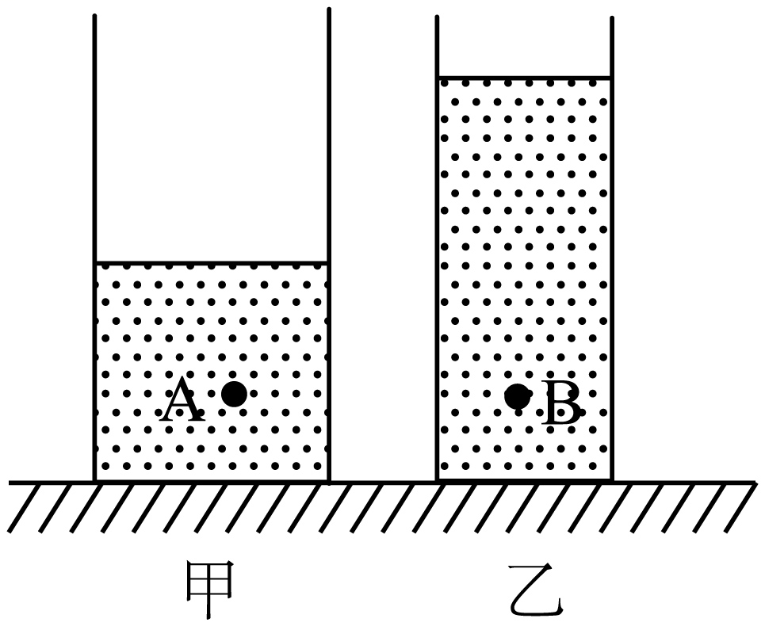
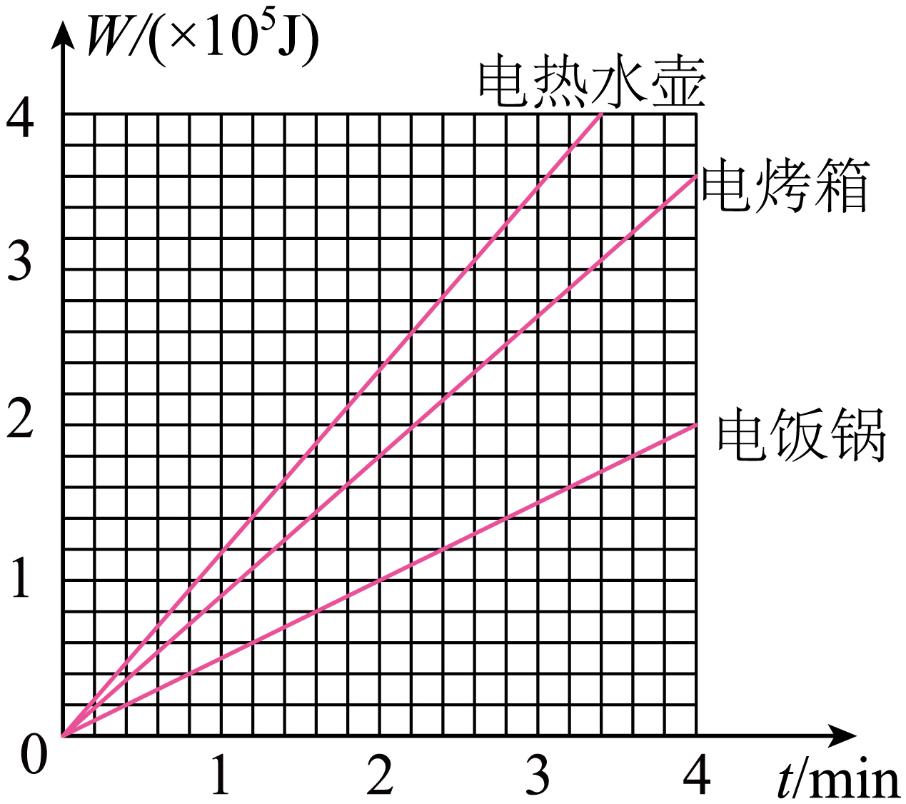
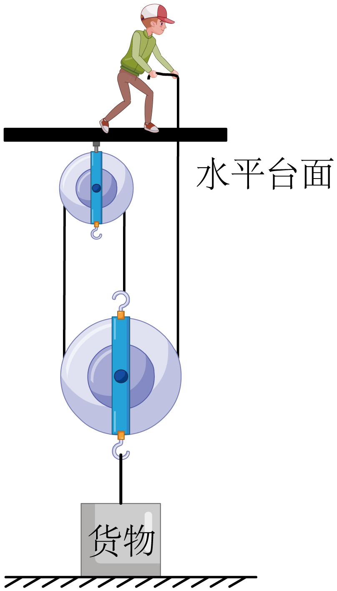

2022年北京市中考物理试题 · 选择题 第11、12、13、14、15题
11. 甲、乙、丙三个小球 质量m和体积V如下表所示，将它们浸没在水中释放，在其稳定后，三个小球所受的浮力分别为
质量m和体积V如下表所示，将它们浸没在水中释放，在其稳定后，三个小球所受的浮力分别为 、
、 和
和 。下列判断正确的是（ ）
。下列判断正确的是（ ）
小球 | 甲 | 乙 | 丙 |
m/g | 30 | 40 | 54 |
V/cm3 | 60 | 50 | 20 |
A.  B.
B. 
C
 D.
D. 
12. 如图所示，两个圆柱形容器甲和乙放在水平桌面上，甲容器底面积大于乙容器底面积，它们分别装有体积相等的液体，甲容器中液体的密度为 ，乙容器中液体的密度为
，乙容器中液体的密度为 。液体内A、B两点到容器底部的距离相等，其压强分别为
。液体内A、B两点到容器底部的距离相等，其压强分别为 、
、 。若两容器底部受到的液体压强相等，则下列判断正确的是（ ）
。若两容器底部受到的液体压强相等，则下列判断正确的是（ ）

A.  B.
B. 
C.  D.
D. 
13. 下列说法正确的是（ ）
A. 沿海地区通常比内陆地区昼夜温差小，原因之一是水的比热容比沙石的比热容大
B. 冬天双手互搓，手的温度升高，是通过热传递的方式改变手的内能
C. 长时间紧压在一起的铅片和金片互相渗入，是由于发生了扩散现象
D. 汽油机的做功冲程中，燃气对外做功，将内能转化为机械能
14. 额定电压相同的电热水壶、电烤箱和电饭锅正常工作过程中消耗的电能W和通电时间t的关系如图所示。关于这三个用电器，下列判断正确的是（ ）

A. 正常工作时，电热水壶比电烤箱产生的热量少
B. 正常工作时，电热水壶比电饭锅的功率大
C. 正常工作时，通过电饭锅的电流最小
D. 在一个月内，电热水壶消耗的电能一定最多
15. 如图所示，工人站在水平台面上用滑轮组提货物。工人第一次竖直向上用200N的力拉绳子时，货物未离开水平地面；第二次竖直向上拉动绳子，使货物以0.09m/s的速度匀速上升。已知工人体重为600N，货物重为900N，货物与地面的接触面积为 ，动滑轮重为100N。不计滑轮组的绳重和摩擦，下列说法正确的是（ ）
，动滑轮重为100N。不计滑轮组的绳重和摩擦，下列说法正确的是（ ）

A. 第一次拉绳子时，工人对水平台面的压力为800N
B. 第一次拉绳子时，货物对地面的压强为4000Pa
C. 第二次拉绳子的过程中，该滑轮组的机械效率为90%
D. 第二次拉绳子的过程中，工人拉力的功率为81W